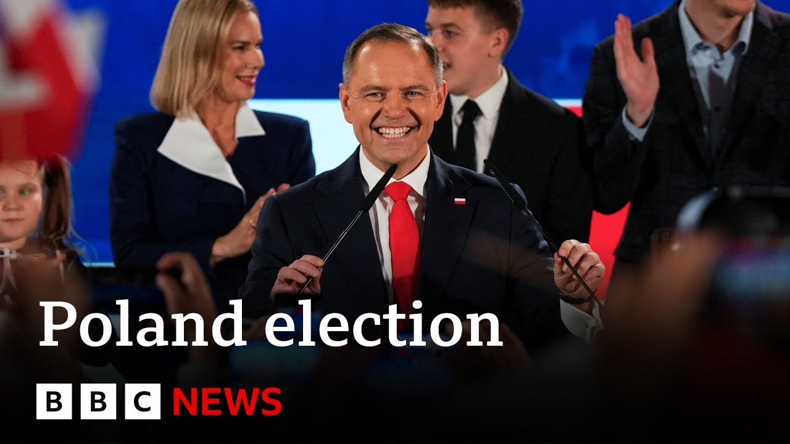

【保守派历史学家卡罗尔·纳夫罗茨基当选波兰新总统 | BBC新闻】
Summary: Poland's pivotal presidential election results show right-wing historian Karol Nawrocki defeating the liberal candidate, marking a setback for Prime Minister Donald Tusk's pro-EU government and signaling a shift toward conservative politics.
摘要： 波兰关键总统选举结果显示，右翼历史学家卡罗尔·纳夫罗茨基击败自由派候选人，标志着总理唐纳德·图斯克亲欧盟政府受挫，预示波兰将转向保守政治。

⏱️ Estimated Reading Time: 6 min
The war in Ukraine is being watched closely by neighboring Poland, which has just held its pivotal presidential election with all votes now counted.
邻国波兰正密切关注乌克兰战争，该国刚刚结束了关键总统选举，所有选票现已清点完毕。
The right-wing historian Carol Navrosky is Poland's new president.
右翼历史学家卡罗尔·纳夫罗茨基成为波兰新总统。
The result is a major setback for the prime minister, Donald Tusk's pro-EU government.
这一结果对总理唐纳德·图斯克的亲欧盟政府是一次重大挫折。
The state electoral commission said that Mr. Navrosky won 50.89% ahead of Warsaw's Liberal Mayor Rafael Chzkovski on 49.11%.
国家选举委员会表示，纳夫罗茨基以50.89%的得票率领先华沙自由派市长拉法尔·恰斯科夫斯基的49.11%。
For more on this, let's speak to our correspondent who's in Warsaw for us, Adam Eastston.
更多详情，我们连线在华沙的记者亚当·伊斯顿。
Hello there to you, Adam.
你好，亚当。
Um, so this is a clear win then.
嗯，那么这是一场明确的胜利。
There are no question marks about how tight it is or anything like that.
对于选举有多胶着之类的问题已无悬念。
It's an official result.
这是官方结果。
The National Electoral Commission has just in the last few minutes confirmed that percentage that lead by 1.7 percentage uh victory percentage points victory for uh Poland's right-wing uh historian Carol Navrosky.
国家选举委员会就在几分钟前确认了这一百分比，波兰右翼历史学家卡罗尔·纳夫罗茨基以1.7个百分点的优势获胜。
He will become Poland's new president.
他将成为波兰新总统。
as you say, that's important because although the office is largely ceremonial, he does have um a veto on legislation and during the 18 months that uh the pro-EU uh prime minister Donald Tusk has been in power, he has been stymied by the current incumbent conservative president an Duda who's blocked him in delivering many of his key campaign promises such as liberalizing the country's very strict abortion law, depoliticizing the judiciary.
如你所说，这很重要，因为尽管总统职位主要是象征性的，但他确实对立法有否决权，而在亲欧盟总理唐纳德·图斯克执政的18个月里，他一直被现任保守派总统安杰伊·杜达阻挠，杜达阻止他兑现许多关键竞选承诺，如放宽该国严格的堕胎法、司法去政治化。
So, Mr. Navrosky will continue to block Mr. Tusk's pro-EU program and uh his victory will also re-energize his supporters, Poland's main opposition, Lauren Justice, Conservative opposition who will now see that they are on their way to a return to power after 18 months when they were when they were voted out and uh parliamentary elections are not until 2027, but uh they will certainly see that they are now in the ascendancy and Poland will be turning toward more to more conservative rightwing uh politics rather than uh cementing its place in the European mainstream with strong relations with Germany and and uh and France.
因此，纳夫罗茨基将继续阻挠图斯克的亲欧盟计划，而他的胜利也将重振其支持者——波兰主要反对党法律与公正党的士气，该党现在认为他们在被投票下台18个月后正重返权力之路，尽管议会选举要到2027年才举行，但他们无疑会认为现在处于上升势头，波兰将转向更保守的右翼政治，而非巩固其与德国和法国紧密关系的欧洲主流地位。
Who is what more can you tell us about Mr. Natsky?
关于纳夫罗茨基，你还能告诉我们什么？
He's 42 years old.
他42岁。
We said he's an historian.
我们说过他是历史学家。
What else can you add for us, Adam?
亚当，还有什么补充吗？
He's an historian because he's the head of the state um national uh commission remembrance commission which investigates um communist era and also World War II era crimes.
他是历史学家，因为他领导国家纪念委员会，该机构调查共产主义时期和二战时期的罪行。
He um is uh a traditional conservative Roman Catholic.
他是传统的保守派罗马天主教徒。
He's got um he believes in strong sovereign Poland within the EU.
他主张波兰在欧盟内保持强大主权。
Um he supports continued assistance to Ukraine, but unlike Mr. Chazkovski, he doesn't want Ukraine to join NATO or the EU anytime soon because he thinks that's too dangerous in the current climate of Russia's continued aggression.
他支持继续援助乌克兰，但与恰斯科夫斯基不同，他不希望乌克兰短期内加入北约或欧盟，认为在俄罗斯持续侵略的当前形势下过于危险。
Um and uh he's also a big fan of President Trump.
他还是特朗普总统的忠实支持者。
Um he went flew during the campaign for basically a thumbs up photograph in the Oval Office with Donald Trump.
他在竞选期间专程飞往美国，只为与特朗普在椭圆形办公室合影点赞。
didn't do much more in terms of a meeting because um he thought that would improve his chances and um so those sort of issues, anti-woke issues, freedom of speech issues.
并未安排更多会晤，因为他认为这能提高胜算，此外还关注反觉醒、言论自由等议题。
Adam uh in fact Donald Trump's um Adam, can I just jump in really quickly?
亚当，其实特朗普的...亚当，我能插一句吗？
He campaigned under the slogan Poland first, polls first.
他的竞选口号是“波兰优先，民意优先”。
How is that likely to be regarded with the EU?
欧盟会如何看待这一点？
What sort of relationship could he have?
他与欧盟的关系会如何？
he'll be much more pushy in terms of uh his relationship with Brussels in terms of um insisting on Poland uh uh uh following it.
在与布鲁塞尔的关系上，他会更加强硬，坚持波兰遵循自身利益。
It's what it what he believes it's in his national interests.
他认为这符合国家利益。
He doesn't want to seed any uh additional powers to Brussels.
他不愿向布鲁塞尔让渡更多权力。
Um he'll be very tough on migration, but there again, the Prime Minister Donald Tusk has been very tough on migration and that's been that's becoming the European mainstream anyway.
他在移民问题上会非常强硬，但总理图斯克同样强硬，而这已成为欧洲主流。
But uh certainly a more combative relationship with Brussels is uh is to be expected under President Navaroski.
但在纳夫罗茨基总统领导下，与布鲁塞尔的关系势必更具对抗性。